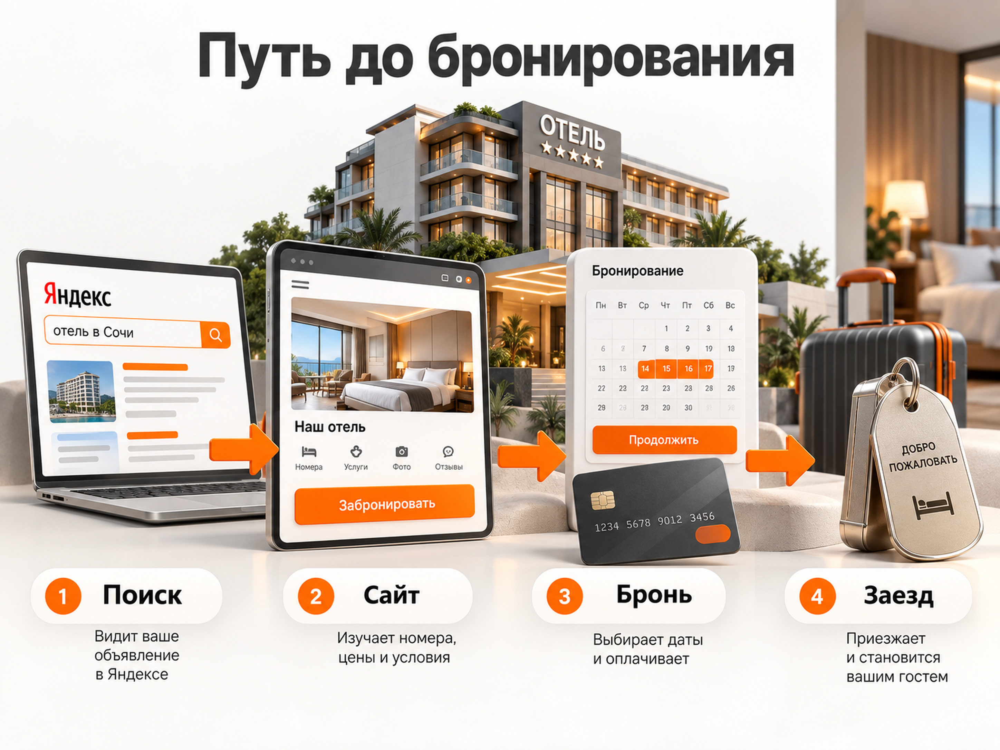
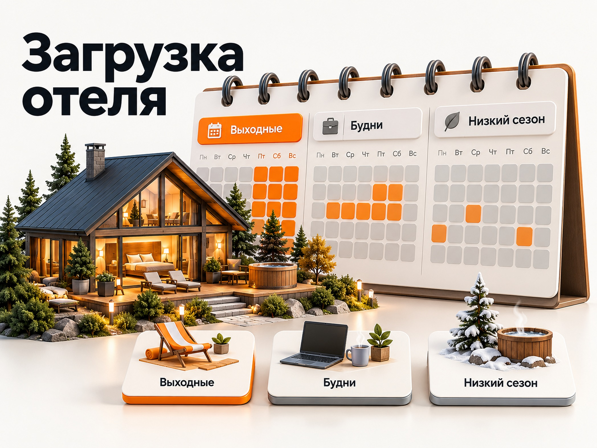

Блог о платном трафике
Продвижение отеля и базы отдыха: как привлекать бронирования
Продвижение отеля или базы отдыха лучше строить вокруг четырёх каналов: Яндекс Директа для привлечения гостей с готовым спросом, Яндекс Карт для локального поиска, площадок бронирования для дополнительного охвата и SEO для получения поискового трафика в долгосрочной перспективе.
Для загородных отелей, глэмпингов и баз отдыха важно учитывать сезонность и загрузку по дням недели. Реклама должна приводить не просто заявки, а оплаченные бронирования на нужные даты. Поэтому её эффективность оценивают по стоимости привлечения гостя, выручке и доходности бронирований.

Какие каналы продвижения отеля и базы отдыха выбрать
Начинать продвижение гостиничного объекта разумно с Яндекс Директа, качественно оформленной карточки на Картах и размещения на подходящих площадках бронирования. SEO стоит развивать параллельно, если у объекта есть собственный сайт и планы на долгосрочное привлечение гостей.
| Канал | Основная задача | Когда ждать результат | Главные ограничения |
|---|---|---|---|
| Яндекс Директ | Привлекать гостей, которые ищут проживание | Трафик после запуска рекламы | Оплата кликов или целевых действий, зависимость от рекламной экономики |
| Яндекс Карты | Получать обращения от людей, выбирающих объект по расположению, рейтингу и условиям | После появления и оформления карточки, без гарантии количества броней | Высокая конкуренция и зависимость от качества карточки |
| SEO | Привлекать поисковый трафик на собственный сайт | Обычно месяцы работы | Нужны качественный сайт, контент и техническая оптимизация |
| Площадки бронирования | Получать заказы от аудитории, которая сравнивает варианты проживания | После подключения и публикации предложений | Комиссии, конкуренция внутри площадок, зависимость от их правил |
Каналы не заменяют друг друга. Человек может впервые увидеть загородный отель на площадке бронирования, изучить фотографии в Яндекс Картах, затем найти официальный сайт и забронировать номер напрямую.
При оценке эффективности важно различать источник знакомства с отелем и канал, в котором гость завершил бронирование.
Как подготовить отель или базу отдыха к рекламе
Перед запуском рекламы необходимо определить, кому подходит объект размещения, какие преимущества влияют на выбор и на какие даты требуется увеличить загрузку.
Например, для загородной базы отдыха в двух часах от крупного города потенциальными гостями могут быть семьи с детьми, пары, компании друзей и корпоративные группы. Каждому сегменту нужны разные аргументы.
Семьям важно показать детскую инфраструктуру, безопасность и условия питания. Парам могут быть интереснее приватность, баня и красивый вид. Корпоративным клиентам необходима информация о вместимости, питании и возможностях проведения мероприятий.
Нужно сформулировать понятное предложение, а не ограничиваться фразой «Комфортный отдых на природе».
Хороший рекламный оффер отвечает на конкретные вопросы: где находится объект, сколько стоит проживание, что включено в стоимость, сколько человек можно разместить и чем отдых отличается от предложений конкурентов.
На сайте должны быть:
- Реальные фотографии номеров, домиков, территории и дополнительных услуг.
- Актуальные цены, доступные даты и условия бронирования.
- Информация о расстоянии от ближайших крупных городов и способах добраться.
- Условия проживания с детьми и животными, если соответствующие услуги предоставляются.
- Возможность самостоятельно выбрать даты, забронировать и оплатить проживание.
- Понятные правила предоплаты, отмены и возврата денег.
Если гость не может сразу узнать стоимость на нужные даты или вынужден несколько раз связываться с администратором, часть рекламного трафика может теряться до оформления бронирования.
Реклама отеля и базы отдыха в Яндекс Директе
Яндекс Директ подходит для продвижения отелей, гостиниц, туристических баз и глэмпингов, когда потенциальные гости уже ищут проживание или подходящий формат отдыха. В первую очередь стоит проверять поисковые кампании с коммерческими запросами, а РСЯ использовать для расширения охвата и возвращения заинтересованных посетителей.
Поисковая реклама
Поиск позволяет показывать объявления пользователям, которые прямо сейчас подбирают место проживания.
Примеры запросов:
- база отдыха в Подмосковье с бассейном
- снять домик с баней на выходные
- загородный отель с питанием
- глэмпинг с чаном на двоих
- семейный отель в Сочи забронировать
- парк-отель для отдыха с детьми
Семантику необходимо разделять по намерениям: бронирование проживания, поиск определённого типа объекта, конкретные удобства, географическое направление и брендовые запросы.
Запросы «снять домик на выходные» и «снять базу отдыха целиком для корпоратива» предполагают разные услуги, средний чек и посадочные страницы.
Особенно важно правильно настроить географию рекламы. Загородный объект может находиться в Московской области, но значительная часть потенциальных гостей будет искать отдых из Москвы. Для курортного отеля география спроса может охватывать несколько регионов России.
Поэтому следует отдельно учитывать, где находится объект и откуда приезжают его гости. Ограничение показов только адресом гостиницы часто не соответствует реальной географии спроса.
Реклама в РСЯ
Рекламная сеть Яндекса позволяет привлекать внимание к объекту размещения с помощью изображений, текстов и видеоматериалов.
Для загородных отелей особенно важны фотографии территории, интерьеров, банного комплекса, бассейна и видов из номеров. Однако привлекательного изображения недостаточно: объявление должно содержать конкретное предложение.
Например, вместо общего сообщения «Лучший отдых за городом» можно тестировать предложения с ценой, типом размещения, продолжительностью отдыха или включёнными услугами.
Отдельное направление - ретаргетинг посетителей, которые посмотрели варианты проживания, проверили даты или начали бронирование, но не завершили его.
При небольшом количестве оплаченных бронирований не следует сразу создавать множество отдельных кампаний и оптимизировать каждую только по конечной оплате. Сначала необходимо получить достаточно данных и убедиться, что система аналитики правильно фиксирует действия гостей.
Продвижение в гостиничном блоке Яндекса
В Яндекс Директе предусмотрено продвижение организаций гостиничного бизнеса в тематическом блоке отелей в результатах поиска.
По документации Яндекса к подходящим рубрикам относятся гостиницы, базы отдыха, гостевые дома, глэмпинги и другие объекты размещения.
Для такого продвижения используются данные организации из Яндекс Бизнеса. В зависимости от выбранного интерфейса реклама может настраиваться через предусмотренные Яндексом инструменты, включая Единую перфоманс-кампанию.
Формат стоит тестировать отдельно от обычной поисковой рекламы. Цель - определить, сколько оплаченных бронирований получает объект и сколько стоит их привлечение.
Какие результаты показывают свежие кейсы
Единой «средней стоимости бронирования отеля из Яндекс Директа» не существует. Даже свежие опубликованные кейсы отличаются в несколько раз.
В кейсе глэмпинга в Подмосковье за период с декабря 2024 по декабрь 2025 года рекламные расходы составили около 1,85 млн ₽. Было учтено 1 159 целевых обращений, а средняя стоимость составила 1 597 ₽. В результат вошли онлайн-бронирования, уникальные звонки и часть обращений из чата. Средний рекламный бюджет составлял около 155 тыс. ₽ в месяц.
В опубликованном в 2026 году кейсе загородного LES Art Resort за четыре месяца получили 556 бронирований и 44,3 млн ₽ дохода. Указанная стоимость привлечения составила 2 876 ₽.
В другом кейсе отеля в Сочи, опубликованном в 2026 году, стоимость бронирования была снижена с 7 395 до 3 675 ₽. Авторы также сообщают о снижении ДРР с 12,3% до 4,5% на рассматриваемом этапе кампании.
Есть и значительно более дешевые результаты. Например, в кейсе базы отдыха летом 2026 года одна рекламная группа в отдельную неделю давала лиды по 356 ₽, но уже на следующей неделе стоимость выросла до 2 372 ₽. Это хорошо показывает, почему нельзя строить прогноз по лучшей неделе рекламной кампании.
Эти результаты нельзя складывать и называть средним по рынку. Различаются регионы, стоимость проживания, сезон, определение конверсии, сайты, известность объекта и модель атрибуции.
Продвижение гостиницы через Яндекс Карты
Для продвижения отеля в Яндекс Картах необходимо оформить полноценную карточку организации с достоверной информацией, качественными фотографиями, услугами и действующим способом бронирования.
Гости оценивают объект не только по рекламе, но и по рейтингу, отзывам, расположению и доступным условиям проживания.
Особое внимание стоит уделить фотографиям всех категорий размещения. Если на территории есть бассейн, баня, ресторан, парковка или детские площадки, соответствующая информация должна быть указана в карточке.
Отзывы требуют регулярной работы. Полезно отвечать не только на негативные комментарии, но и на положительные, поскольку будущие гости изучают отношение администрации к клиентам.
Платное продвижение через Яндекс Бизнес может повысить заметность организации. Но покупать размещение без измерения реальных обращений и бронирований не стоит.
Площадки бронирования: как использовать агрегаторы
Площадки бронирования помогают отелю получать дополнительный спрос, особенно когда собственный сайт ещё не привлекает достаточного количества гостей.
К таким каналам относятся, например, Яндекс Путешествия, Островок и другие подходящие сервисы размещения.
Однако при расчёте доходности необходимо учитывать комиссию конкретного канала. Условия отличаются в зависимости от площадки, тарифа, договора и дополнительных инструментов продвижения.
Предположим, стоимость проживания по одному бронированию составляет 18 000 ₽, а комиссия площадки по договору равна 20%.
Расчёт:
18 000 × 20% = 3 600 ₽ комиссии за бронирование.
Если собственная реклама привела гостя с расходом 4 000 ₽ на оплаченный заказ, первая прямая бронь в этом примере оказалась дороже брони через агрегатор на 400 ₽.
Поэтому прямое бронирование не всегда автоматически выгоднее. Нужно учитывать реальные рекламные расходы, комиссии, стоимость платёжных сервисов, отмены и возможность повторных продаж.
Задача отеля - не отказываться от агрегаторов, а управлять долей каждого канала и понимать его вклад в прибыль.
SEO-продвижение сайта отеля или базы отдыха
SEO помогает привлекать пользователей, которые ищут проживание по направлениям, типам объектов, услугам и особенностям отдыха. Для этого необходим сайт с полезными страницами, которые отвечают конкретным запросам гостей.
Например, на сайте загородного комплекса могут быть отдельные содержательные страницы для домиков с баней, семейного отдыха, проведения корпоративных мероприятий и отдыха с бассейном.
Но создавать десятки практически одинаковых страниц с заменой названия города не нужно. Каждая страница должна описывать реальную услугу или предложение и содержать уникальные фотографии, условия и цены.
Особое значение имеют запросы с географией. Потенциальные гости могут искать отель рядом с природной достопримечательностью, горнолыжным комплексом, озером или определённым населённым пунктом.
Полезный контент может отвечать на вопросы, которые возникают до бронирования: как добраться, что посмотреть рядом, чем заняться зимой, какие есть варианты отдыха с детьми.
Для поискового продвижения также важны скорость загрузки, адаптация под мобильные устройства, корректная индексация страниц и доступность информации о стоимости проживания.
SEO имеет смысл рассматривать как долгосрочное направление. Оно не гарантирует бесплатные бронирования: на создание, улучшение и поддержку сайта также требуются ресурсы.
Как продвигать отель в выходные, будни и низкий сезон
Рекламную стратегию отеля нужно строить с учётом фактической загрузки. Для загородной базы отдыха спрос на субботу может быть высоким, тогда как номера на вторник или среду остаются свободными.
В такой ситуации одинаковая реклама на все даты неэффективна. Необходимо менять предложение, аудиторию и приоритет бюджета.
| Период | Целевая аудитория | Что рекламировать | Главная задача |
|---|---|---|---|
| Выходные и праздники | Пары, семьи, компании друзей | Отдых на 2-3 дня, баня, бассейн, семейные пакеты | Продать доступные номера без ненужных скидок |
| Будние дни | Удалённые сотрудники, пары со свободным графиком, корпоративные группы | Тарифы на будни, длительное проживание, работа и отдых, мероприятия | Повысить загрузку свободных дат |
| Низкий сезон | Постоянные гости, корпоративные клиенты, аудитория тематического отдыха | Сезонные программы, пакеты с дополнительными услугами | Привлечь спрос без чрезмерного снижения цены |

Выходные и праздничные даты
Когда свободных номеров мало, увеличивать рекламный бюджет только ради количества заявок нет смысла. Гораздо важнее учитывать наличие мест, категорию номера и потенциальную прибыль.
Рекламу стоит направлять на те даты и предложения, где действительно есть доступное размещение.
Будние дни
Для загрузки будней необходимо предложить аудитории отдельную причину приехать.
Это могут быть специальные тарифы на проживание с понедельника по четверг, пакеты с баней или спа, предложения для небольших корпоративных групп либо проживание на несколько дней.
Главное, чтобы условия соответствовали возможностям объекта. Например, продвижение формата «работа за городом» будет малоэффективным, если на территории нестабильный интернет и нет подходящих рабочих мест.
Низкий сезон
В низкий сезон недостаточно просто уменьшить стоимость номера. Иногда нужно изменить сам продукт, который продаёт отель.
Загородный комплекс с круглогодичной инфраструктурой может предлагать гастрономические выходные, банные программы, корпоративные мероприятия и тематические заезды.
Если часть объектов закрыта на зиму, необходимо честно указывать доступные услуги и не рекламировать инфраструктуру, которой гость не сможет воспользоваться.
Дополнительно стоит работать с базой постоянных гостей, корпоративными заказчиками и ранним бронированием следующего сезона.
Сколько стоит реклама отеля: пример бюджета и воронки бронирования
Рекламный бюджет для отеля следует рассчитывать от планируемого количества оплаченных бронирований, а не выбирать произвольную сумму. Для прогноза нужны цена клика, конверсия посетителей в обращения и доля обращений, которые заканчиваются оплатой.
Рассмотрим условную модель для одного загородного отеля в России. Это не рыночная статистика и не обещание результата, а пример расчёта с заданными параметрами.
| Показатель | Принятое значение |
|---|---|
| Рекламный бюджет на месяц | 60 000 ₽ |
| Средняя стоимость клика | 60 ₽ |
| Переходы на сайт | 1 000 |
| Конверсия посещений в обращения | 6% |
| Обращения по бронированию | 60 |
| Доля обращений с подтверждённой оплатой | 25% |
| Оплаченные бронирования | 15 |
| Стоимость обращения (CPL) | 1 000 ₽ |
| Стоимость оплаченного бронирования (CPA) | 4 000 ₽ |
Получается, что при бюджете 60 000 ₽ и указанных конверсиях реклама может принести 15 оплаченных бронирований. Стоимость одной оплаченной брони в этой модели составляет 4 000 ₽.
Важно, что показатели CPC, конверсии и доли оплат здесь условные. Для конкретного объекта они зависят от региона, сезона, категории размещения, конкуренции, стоимости проживания и качества сайта.
Как посчитать бюджет под нужное количество гостей
Предположим, отелю нужно получить 15 дополнительных оплаченных бронирований.
При конверсии обращений в оплату 25% потребуется:
15 / 25% = 60 обращений.
Если сайт превращает в обращения 6% посетителей, понадобится:
60 / 6% = 1 000 переходов.
При стоимости одного перехода 60 ₽ бюджет составит:
1 000 × 60 = 60 000 ₽.
Этим же способом можно рассчитывать необходимый бюджет для других целей, заменяя условные показатели результатами действующей рекламы.
Сколько выручки принесут бронирования
Допустим, средний чек одного оплаченного бронирования составляет 18 000 ₽ за весь период проживания.
15 × 18 000 = 270 000 ₽ выручки.
Отношение выручки к рекламным расходам (ROAS):
270 000 / 60 000 = 4,5, или 450%.
Но ROAS не показывает чистую прибыль.
Если после переменных расходов на обслуживание одного бронирования остаётся 50% выручки, то до затрат на рекламу объект получает 9 000 ₽ с заказа.
После вычета рекламных расходов 4 000 ₽ остаётся 5 000 ₽ на бронирование до распределения постоянных расходов, налогов и иных неучтённых затрат.
Именно такая экономика позволяет оценить, сколько отель может позволить себе тратить на привлечение гостя.
Почему нужно учитывать отмены
Предположим, из 15 оплаченных бронирований три впоследствии отменены с полным возвратом средств.
Фактически осталось 12 оплаченных и неотменённых бронирований.
Тогда стоимость привлечения составит уже:
60 000 / 12 = 5 000 ₽ за состоявшееся бронирование.
Выручка сократится до 216 000 ₽ при том же среднем чеке 18 000 ₽.
Поэтому оценивать эффективность гостиничной рекламы только по количеству заявок или первоначальных оплат недостаточно. Нужны данные об отменах, возвратах и фактических заездах.
Какие показатели отслеживать в рекламе отеля
Для управления рекламой нужно связать Яндекс Директ, Яндекс Метрику, модуль бронирования и систему учёта заказов отеля.
В Метрике можно фиксировать посещение страниц номеров, проверку доступности дат, начало оформления бронирования и завершение оплаты. При корректной интеграции электронной коммерции также можно анализировать покупки и выручку по источникам.
Если бронирование завершается по телефону или в мессенджере, необходимо отдельно учитывать такие обращения и их дальнейший результат. Для звонков подходит коллтрекинг, для остальных обращений - учёт в CRM или гостиничной системе.
Основные показатели для оценки:
| Показатель | Что показывает |
|---|---|
| CPC | Среднюю стоимость перехода из рекламы |
| CPL | Стоимость обращения по бронированию |
| CPA | Стоимость оплаченного бронирования |
| ROAS | Выручку относительно рекламных расходов |
| Доля отмен | Какая часть заказов не приводит к проживанию |
| ADR | Среднюю выручку за проданную номероночь |
| RevPAR | Выручку от номеров на одну доступную номероночь |
| Доля прямых броней | Часть бронирований, поступивших напрямую без OTA |
Важно сопоставлять рекламные расходы с датами бронирования и проживания. Например, реклама в октябре может приносить заказы на новогодние праздники. Если оценивать только октябрьские заезды, часть результата окажется неучтённой.
Особенности продвижения загородных отелей, глэмпингов и баз отдыха
Общая механика интернет-рекламы похожа, но аудитория и факторы выбора у разных типов размещения отличаются.
Как продвигать загородный отель
Для загородного отеля ключевое значение имеют расстояние от крупного города, уровень комфорта, питание и инфраструктура. Продвижение стоит строить вокруг сценариев отдыха: романтические выходные, семейная поездка, отдых с бассейном, спа или корпоративное мероприятие.
Рекламу необходимо показывать не только в районе расположения отеля, но и в городах, из которых реально приезжают гости.
Как рекламировать глэмпинг
Для глэмпинга особенно важны фотографии, приватность размещения, вид из домика, уровень комфорта и условия проживания в разную погоду.
В рекламных объявлениях лучше раскрывать реальные преимущества конкретного объекта: панорамное остекление, собственная терраса, банный чан или размещение у озера, если всё это действительно предусмотрено.
Не менее важно показывать наличие отопления, санузла и других бытовых удобств. Потенциальный гость должен понимать, какой уровень комфорта он получит.
Как привлекать гостей на базу отдыха
Продвижение базы отдыха зависит от формата размещения. Небольшие домики для семейного отдыха, крупный комплекс для мероприятий и туристическая база для рыбалки требуют разных предложений.
Для семейного отдыха стоит делать акцент на размещении с детьми, территории и дополнительных услугах. Для компаний - на вместимости домиков, бане, мангальной зоне и условиях совместного проживания.
Если база принимает большие группы, нужно предусмотреть отдельное предложение для корпоративных заездов и аренды нескольких объектов одновременно.
Как запустить продвижение отеля: порядок работ
Начать стоит с оценки существующей загрузки, прямых и посреднических бронирований и доступного рекламного бюджета.
Затем необходимо проверить сайт и модуль бронирования, оформить карточки организации, определить рекламную географию и собрать коммерческие запросы для Яндекс Директа.
После подключения аналитики можно запускать поисковую рекламу и проверять дополнительные форматы, включая РСЯ и гостиничные места размещения.
Первые результаты следует оценивать не только по количеству заявок, но и по оплаченной выручке, стоимости бронирования и заполнению нужных дат. При небольшом количестве заказов выводы по отдельным объявлениям могут быть ненадёжными, поэтому не стоит принимать решения по нескольким случайным конверсиям.
По мере накопления данных бюджет перераспределяют между предложениями и периодами, которые приносят наибольшую дополнительную прибыль.
Итог: как получать больше бронирований
Продвижение отеля или базы отдыха должно решать конкретную задачу бизнеса: повышать загрузку свободных дат и увеличивать доходность проживания.
Яндекс Директ позволяет работать с существующим спросом, Карты помогают гостям выбрать объект, площадки бронирования расширяют охват, а SEO развивает собственный источник поискового трафика.
Результат зависит не только от рекламы. На количество оплаченных бронирований влияют фотографии, цены, расположение, отзывы, удобство сайта и работа с клиентами.
Нужна настройка и ведение Яндекс Директа для отеля или базы отдыха? Я занимаюсь запуском и оптимизацией рекламных кампаний с акцентом на реальные обращения и продажи. Стоимость услуг - от 30 000 ₽ в месяц. Обсудить продвижение можно через контакты на сайте naklikay.ru.